Review directly in the editor
A gutter star marks each Claude edit, and a whole-line highlight (green over added lines, red over removed, with a matching change bar down the gutter) colors exactly what moved. Clicking view changes opens the diff inline, in git's own colors, with Claude's reasoning and Keep / Undo / Chat / View diff alongside.
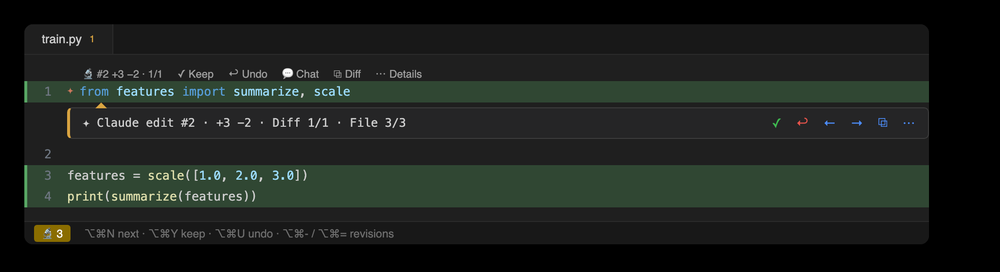
A dedicated diff for each edit
A single change opens as its own diff tab, and Prev / Next in the title bar steps through the file's edits without losing your place.
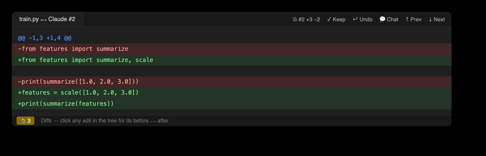
Surgical undo
A position-anchored 3-way merge reverts a single change while later edits to the same file are preserved. File History lists the active file's edits, newest first, and follows the editor as you switch tabs.
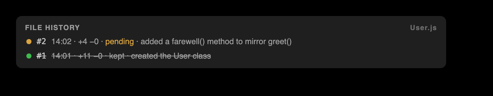
Conflict handling
When an undo would overlap later changes, the observatory refuses rather than overwrite, and offers an explicit --force restore. Undo is anchored on line positions rather than fuzzy text, so it stays safe against duplicated content.
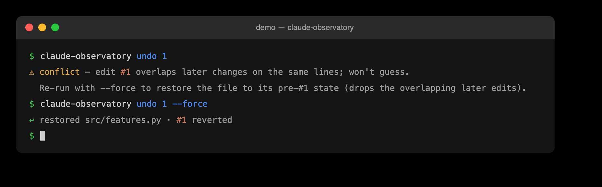
The session as the conversation you had
Every other view organizes the work the way the agent saw it: worktrees, runs, its own plan, files. The Prompts window is one row per thing you asked for, in the order you asked, each carrying what it produced — edits, files, folders, tokens, subagents, workflow runs, tasks, and background shells. The prompt is printed whole and wrapped, never clipped, and a row expands to show Claude's reply to it with its tool calls stripped out.
Selecting a row scopes the whole Overview beside it: the fleet, the runs, the shells, and the entire change map narrow to the work that prompt caused, and the session-wide Accept All, Reject All, and Clear Resolved retarget to it. Attribution is by start time, decided once in core: a shell that prompt #4 launched belongs to #4 even when it exits during #7, because #4 is what caused it. The task list is the one pane a prompt does not filter — a prompt names no tasks, and the pane says so rather than showing a subset. From the shell: claude-observatory prompts, human-readable or --json, with --id N --response for one prompt's reply.
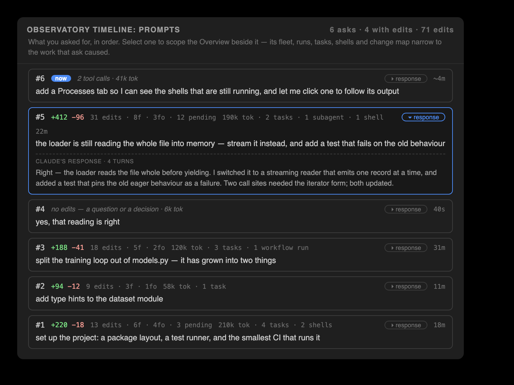
The Overview panel
The Overview is a master-detail panel in the bottom Claude Observatory dock. Its left nav opens on Sessions — this workspace's recorded sessions, and the one tab whose selection switches what the whole observatory reviews — followed by four tabs showing who is working and on what. Fleet and Sessions have sections of their own below; Workflows lists each multi-agent run, and Processes the background shells, both described further down this section. Tasks shows the session's numbered task list — Claude's TaskCreate/TaskUpdate tasks or, on newer Claude Code builds, its background Agent runs. Each task row joins its strict rollup, so it carries the ±lines and edit count of the work captured while that task was in progress, with per-task Accept, Reject, and Clear acting on exactly that span. An edit made outside every in-progress window stays in an explicit unassigned bucket rather than being swept into a neighboring task. Each pane opens with a one-line description of what it shows, and the tabs and change-map sections carry hover descriptions.
The panel follows its own width: docked narrow — under about 620 px — the master and detail stack instead of splitting side by side, and the nav bar gives each review axis its own row, so a narrow dock loses no control.
Selecting a row fills the right pane with its change map, two labeled sections top to bottom. Folders is a strip of equal tiles, one per changed directory, ranked by lines changed and colored by review status. It leads with the eleven folders that moved most and folds the rest into a +K more tile, which opens the strip to every folder — wrapped onto further rows, capped at five and scrolling, with show fewer to fold it back; tiles never shrink below a readable width, so a narrow panel gets more rows rather than slivers. Files is a churn-ranked ledger of every changed file, its ±line bars colored by review status, worst-unreviewed-wins. Clicking a Folder tile drives the nav bar's Folder axis to that folder's first pending edit and filters the ledger to it. A summary bar along the bottom reports the pending, accepted, and reverted counts with the file and folder totals for whatever is in scope, and names the picked prompt or folder filter. Beneath it, the selected row's feed shows what that thing is doing, read from the file it writes.
The title bar is a two-row review nav bar. The top row names the session under review — its title or first prompt, with the raw id in the tooltip. It is a label, not a control: the Sessions tab is where the session changes. Then come the session-wide bulk actions Accept All · Reject All · Clear Resolved · Export, and, on the right, Search · Active only · Spotlight · Refresh. The bottom row carries four review axes that step the pending edits at four granularities: a Diff axis over the open file's edits (Keep, Undo, Chat, and View diff, which opens a real side-by-side diff editor), a File axis over changed files (Accept / Reject File), a Folder axis over changed directories (acting on that folder's edits alone), and a Prompt axis over your own prompts (Review, Accept Prompt, Reject Prompt). Every rollup is computed once in core and rendered as given by both editors; from the shell: claude-observatory changemap --json.
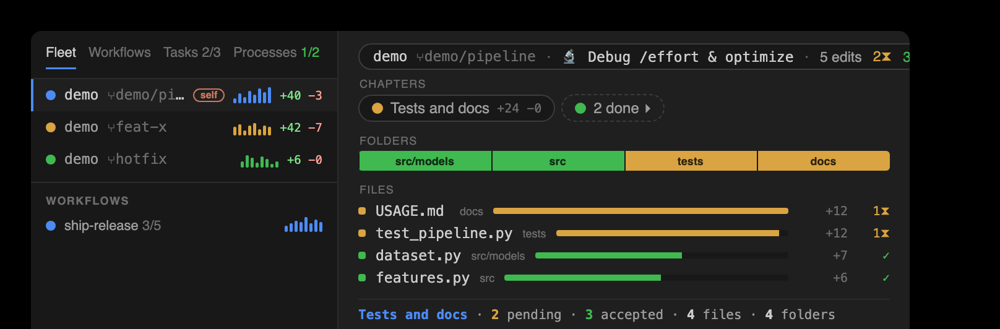
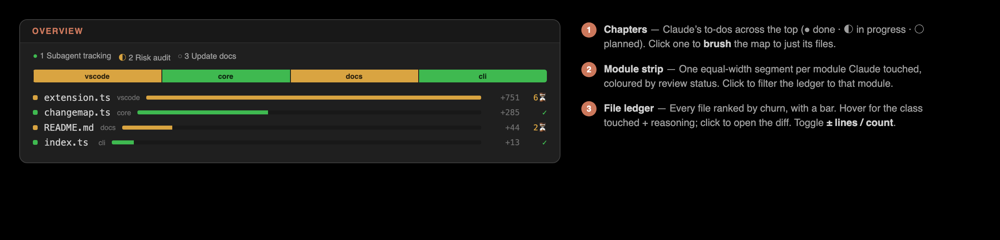
A live list of running agents
The Fleet tab lists every running Claude session in one live nav, including sessions in separate git worktrees of the same repo. Each agent unfolds to its nested subagents (agentType, description, phase, current task & to-dos, ±lines, and a chat button), and carries an ↗ suffix when its reads or edits landed outside the workspace; an Active only toggle narrows the list, Clear completed dismisses rather than deletes, and live cross-agent file conflicts lead the Actions view, flagging any file two or more agents are touching. Selecting a row fills the detail pane with that agent's change map, and a live transcript watcher keeps the view current the moment a tool runs — not just on edits.
Multi-agent workflow runs
Claude Code's deterministic multi-agent orchestration produces workflow runs — scripted fan-outs of agents that would otherwise be invisible. The observatory tracks them one level above subagents, mining each run from its own transcripts and state file at zero tokens: an informative name; a running or done state, freshness-gated so an interrupted run that never wrote completed is not shown running; per-phase progress groups; and per-agent tokens · time · edits, each row carrying an activity sparkline styled like the Fleet rows. Selecting one fills the detail pane with that run's change map; from the shell, claude-observatory multitask --json and changemap --json.
Claude's own plan, attributed strictly
The Tasks tab is Claude's numbered to-do list for this session, read from the task files the harness writes: one row per task, with its status, the present-continuous label it shows while working, and any task it is blocked by. Each row joins the change map's per-task rollup, so it also carries the ±lines and the edit count of the work captured while that task was in progress. Attribution is strict and never inferred: an edit made outside every in-progress window is reported in an explicit unassigned bucket rather than swept into the task before or after it. Accept, Reject, and Clear on a row act on exactly that strict span; from the shell they are task-keep, task-undo, and task-clear (with task-clear --completed for every settled task at once), and claude-observatory tasklog prints the cross-agent task log — one row per task, unioned across every worktree sibling and subagent that contributed to it.
Background shells, after they leave the screen
A shell started with run_in_background keeps running after the tool call that launched it has scrolled away. The Processes tab lists each one with its state, how long it has run, and how much output it produced, reconstructed from the transcript: the spawn record names the shell, a completion notification carries its exit code, and the output file is stat'd for size and last write. Running shells sort first. There is deliberately no OS process id — the transcript never records one, and the agent may be running over SSH or in a devcontainer, so the harness's own shell id is the identity, and it is what the agent itself uses to read or kill the shell. A shell with no recorded end reports its runtime up to the last moment the session is known to have existed, rather than up to now. From the shell: claude-observatory processes, and processes --id <shell> for the full command and a tail of its output.
What one thing is doing
Selecting an agent, a workflow, a task, a process, or the session itself opens a feed beneath the change map, read from the file that thing writes. Core decides what the feed is, so every surface agrees: while the source is still writing it is live — followed on the panel's refresh tick, and headed with the age of the newest evidence found rather than a claim of real time; once the source has finished, the same view is an audit log — a record of what happened, not a stream — and polling stops. Entries read downward, oldest first. A capped feed states how many earlier entries it did not show, and a feed that can only be partial says why. From the shell: claude-observatory feed --kind session|agent|workflow|task|process, with --id, --limit, and --json.
Parallel agents across worktrees
One row per running agent shows a live phase (working · awaiting-input · awaiting-permission · idle · done; heuristic phases are marked ~ and inferred from inactivity, never asserted), its worktree and branch, an activity sparkline, ±lines, tokens · time, risk, and live cross-agent file conflicts leading the Actions view, flagging any file two agents are touching, even when one of them is idle. Claude Code keys its sessions by working directory, so two worktrees of one repo are otherwise tracked separately; the observatory correlates them by reading each worktree's .git pointer files (plain-file reads, never the git binary) and unions them into one fleet. Tracking is read-only and path-only: no file contents cross between agents. From the shell: claude-observatory multitask, and claude-observatory siblings (alias fleet) — an agent-facing digest an agent can call mid-run to avoid overlapping a sibling's work.
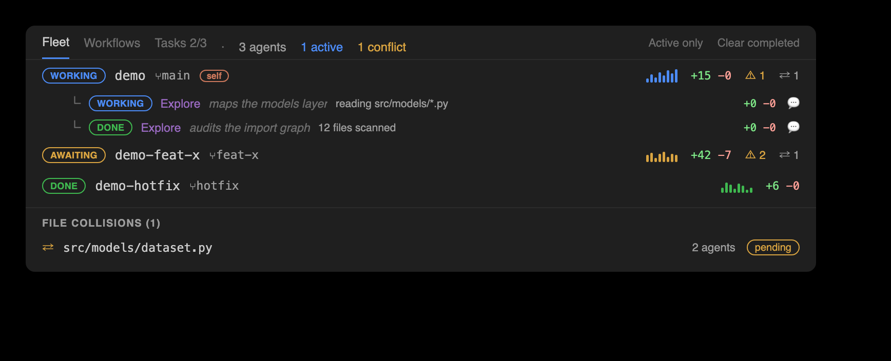
Every session in the workspace
The Sessions tab lists each Claude Code session recorded for this workspace, led by Claude's own title for it — its title or its first prompt — and ordered by when its conversation was last active. The live session is marked. Selecting a row is not a change of view but a change of subject: it pins the session every window reviews, the same choice the Switch Session command makes.
Each row reads like a fleet row: the session's captured edits, the files they touched, and how many still await review. Every derived fact — the title, those counts, the risk tally a fleet row shows — is cached in a small on-disk sidecar per session, each keyed to the file it came from, so a listing costs one stat per session and re-derives only what actually changed. Ordering follows the conversation rather than the store, so accepting a batch of old edits cannot move a finished session back to the top. The same rows back the reworked Switch Session picker, which opens with the session in effect preselected and matches on the raw id as you type. From the shell: claude-observatory sessions, human-readable or --json.
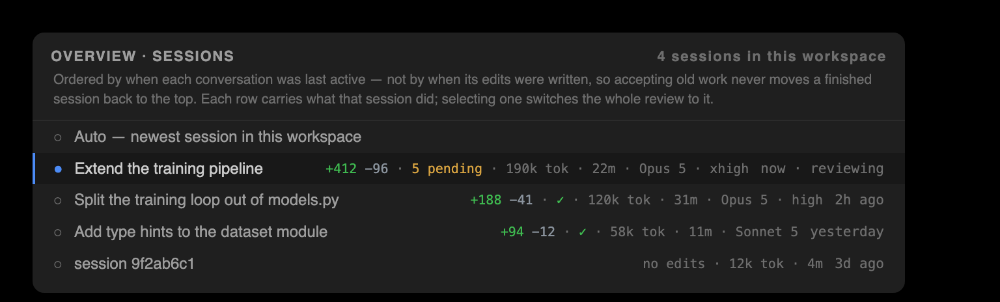
Risk and egress audits
Two audits are mined from the same action timeline and cost no extra Claude tokens. Risk answers what the session did that can hurt. It flags shell commands that can cause damage — data loss (rm -rf, git reset --hard, git clean -f, force push), remote code (curl | sh), privilege escalation (sudo), or credential-file access — as HIGH / MED rows carrying the reason in plain words, and it reports the edits that landed outside the workspace under a heading of their own. That second half is stated here because nothing else can state it: the file ledger presents every path workspace-relative. Egress answers where the session reached. It lists web hosts, MCP servers, network shell commands, and the files read from outside the workspace, each channel scoped remote, outside, or unknown — outside is a fact about a local path and unknown is an admission that the destination could not be determined, so the two are never printed as one. Both ride the Actions view as their own nodes and run from the shell as claude-observatory risk and claude-observatory egress, each taking --json and --root to set the workspace boundary; risk --all lifts the eight-row cap on its outside-the-workspace list, which otherwise states how many files it did not show. Both report what a session exercised, never what it was permitted — Claude Code writes nothing to the transcript when it asks for approval, so auto-approved and hand-approved work are indistinguishable from the outside, and the audits say what ran. Neither audit changes the store or its format.
A change feed with Claude's reasoning
A session recap sits on top, then a Context section naming what shaped the session: the skills it invoked, the plans it wrote, the memory it read, and whether it was resumed from a compaction, alongside the instruction files present where Claude Code auto-loads them. Each row is labeled with how it is known — transcript for things the session demonstrably did, file-present for files that merely exist in a loaded location, because current builds inject CLAUDE.md and memory system-prompt-side and leave no per-session trace. Claiming those as observed would be false; omitting them would hide the biggest influence on the session, so they are listed and labeled. Rows backed by a file open it on click. Below that sits a coalesced change feed: files ordered by most-recent activity, with adjacent same-file edits collapsed into a single ×N run so a busy session stays legible. Each edit carries its reasoning, parsed from the transcript at zero extra tokens. Every row also holds the observatory's memory of that file — its cross-session accept/revert history — so files that are reverted often are flagged.
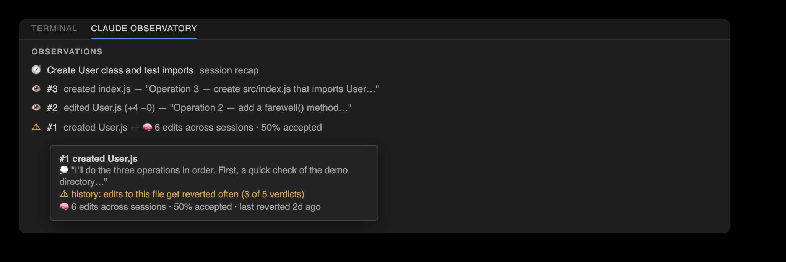
A timeline of every tool call
A typed timeline mined from the transcript at zero tokens: every read, grep, shell command, web fetch, subagent spawn, and to-do or task-list update Claude made this session, each correlated with its result. Context compactions appear here too, in their own curated group (auto · 1M→14k · 986k dropped · 2m 5s) — when the harness runs out of context it summarizes the conversation and continues, so everything above that line reaches later turns as a summary rather than as what was actually said. The per-event drop is derived as before minus after; the harness's own cumulative figure is a running session total, which would overstate every compaction after the first. The view leads with the live cross-agent file conflicts (moved here from the Overview — click one to open the contested file), and closes with the two audits: Outside the workspace, the edits that landed beyond the workspace root, and Egress, everywhere the session reached. The Actions view lives in the sidebar — the Claude Edits activity-bar view alongside Edits, Diffs, and File History, and a pane in the JetBrains tool window — with its category groups collapsed by default. The view stays curated (high-signal categories, with a Show all toggle for reads, searches, and meta), errors always surface, and edit rows link directly to their review. From the shell: claude-observatory actions (alias trace), a human-readable feed or --json, filtered by --category, --errors, --limit, and --all.
Per-subagent timelines
When Claude spawns a subagent (the Task / Agent tool), its work is tracked rather than lost in a side file. Each one is nested under its parent in the Overview's Fleet tab, with per-subagent metrics (duration, tokens, tool calls, status) mined from the subagent transcript at zero tokens and correlated to the spawn; selecting one opens its feed, so its reads, edits, and shell calls read in order. From the shell: claude-observatory subagents (alias agents), a human-readable feed or --json.
Context-preloaded chat prompts
A chat prompt about any edit, action, subagent, or task can be assembled with one click, context included: the target, Claude's own reasoning, the before/after diff or the command and its result, and the task or subagent framing — copied to your clipboard for your own Claude session. The observatory never calls a model, so this costs zero extra tokens. From the shell: claude-observatory chat-context --json.
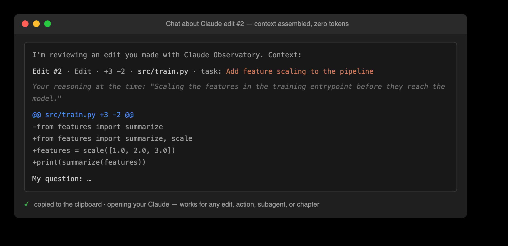
Review controls on four surfaces
One review bar appears on four surfaces: the status bar, the editor's title bar, a floating bubble over the live edit, and the Overview panel's title bar. Diff n/m steps through the open file's pending edits, File n/m steps across every file that has them, and the counters follow the active editor. The bar is two-tier: the File axis plus Spotlight and Search appear whenever anything is pending, while the Diff axis and the per-edit Keep / Undo and Accept / Reject File appear only when the open file has edits. On the Overview panel the bar takes its fullest, two-row form: a top row of controls — the session-name selector and the session-wide Accept All · Reject All · Clear Resolved · Export, with Search · Active only · Spotlight · Refresh on the right — over a bottom row of four review axes that adds a Folder axis (Accept / Reject Folder) and a Prompt axis (Review, Accept Prompt, Reject Prompt) to Diff and File. Every action button carries its short label beside a color-coded icon (keep/accept green, undo/reject red, chevrons blue, clear orange, search/spotlight purple), and the session-wide Clear Resolved rides on the status bar. The ⌥⌘ shortcuts work throughout.
The Spotlight view
Spotlight dims every unmodified line so Claude's changes stand out. One toggle turns a heavily edited file into a focused view of exactly what moved.
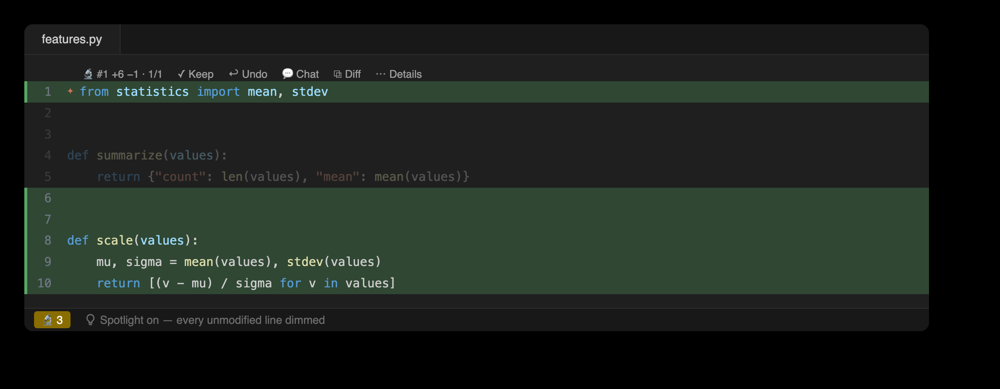
Progress, tokens, and usage
A top bar names the active Claude Code session by its human-readable title — its title or first prompt, not the raw id; searching edits lives on the review nav bar. Beside the name, a chip states what the session is actually running on: its model and reasoning effort (Opus 4.8 · max effort). The model is read from the assistant turns themselves, excluding sidechain turns because a subagent may run a different model, so a session that switched models mid-flight shows the current one and discloses that it switched, with per-model turn counts in the tooltip; effort comes from the field current Claude Code stamps on every turn, falling back to the /effort command echo on older transcripts, and a session that never declared one shows nothing rather than a guessed default. A second chip states the session's compactions — how many times the harness summarized the conversation away and how much the last one dropped (⤺ 2 compactions · last dropped 986k), with each event's trigger, before → after, and drop in the tooltip. A session that was never compacted shows no chip at all rather than a zero. Below that, a Session tokens section shows the session's cumulative spend split the way the API bills it — input (uncached), output, and cached reads, with the cache hit rate (reads ÷ all context sent; cache writes in the tooltip) — kept live by an incremental per-transcript cursor that parses only newly appended bytes. Under an Edits heading, a live review scoreboard tracks pending (clicking the count jumps to the oldest edit awaiting review), accepted, and reverted, with a progress bar, a token step-line plot over Today / 7 days / 30 days, and context plus 5h and weekly plan-usage bars — the 5h and weekly rows now reading as an estimated used / total, the 100% figure inferred from the reported tokens divided by their percent. Session resolution is stub-proof: command-only transcripts (a confirmed /effort or /model, an interrupted command) never displace the session under review, and a fresh session's empty panels say so honestly — with a one-click switch to the previous session's work instead of a misleading setup prompt.
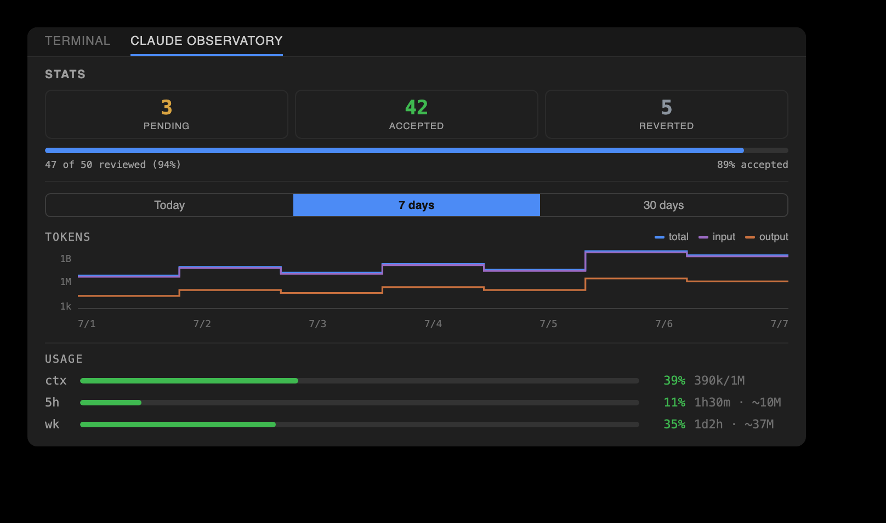
Session metrics
One readout summarizes what the session cost and did: lines added and removed, tool-call and error counts, per-subagent duration and tokens, and tool latency (median / p95 / max, from each call's tool_use → tool_result gap). All values are derived at zero tokens: claude-observatory metrics, human-readable or --json.
Demo mode and the guided tour
Start Demo Mode — in the VS Code command palette and in JetBrains Find Action, on the Edits panel's toolbar in both, and in the Edits empty state in both — replays a scripted session through the real pipeline inside an isolated demo session and an observatory-demo/ folder, while you watch the panels fill beat by beat. The scenario runs to three prompts, six numbered tasks and nine captured edits, and is arranged so that no panel can only show its empty state: a subagent with its own timeline, a three-phase workflow run, a second agent in a sibling worktree holding a file this session also has pending (the live collision), three background shells (one exits 0, one fails, one keeps running), a context compaction, a failed tool call, a deletion captured through the Bash tree-diff path, and one write outside the workspace for the Risk audit. Review works normally throughout: Accept and Reject act on real records, and undoing the deletion restores the file.
When the replay finishes, a guided tour walks forty-one steps over every surface — each Overview tab, the change map's Folders strip, Files ledger, summary bar and feed, the four review axes, the Edits tree, inline review, File History, the Risk and Egress audits, Observations and Stats. Each step brings its panel forward and rings the control it names — a CSS outline in VS Code, a glass-pane painter in JetBrains. The step's text stays in the tour window rather than being copied into the panel, so the panel keeps showing the product. JetBrains rings some controls more coarsely: where a VS Code step outlines a single button, a JetBrains step may outline the toolbar it sits in. Neither editor can draw over IDE chrome it does not own — the activity bar, the tab strip, the status bar — so for those the step's text names the control instead. The script lives in core, so the terminal (claude-observatory demo --tour), VS Code and JetBrains show the same tour in the same order.
It plays itself — each step holds long enough to read it, and any control that moves the tour (Next, Back, a step jump) hands you the wheel, with a transport button to resume; moving the window does not. It lives in an editor-area panel in VS Code, which can detach onto a second screen, and in a right-hand tool window in JetBrains, which cannot — that floating window never appeared in PyCharm 2025.2, so it was removed rather than left as a dead control. Hiding the JetBrains tool window pauses the tour, because its wait steps act on a timer and must not do so behind a window you cannot see. A step that asks you to do something shows a countdown and performs it if you do nothing, so watching hands-off still shows the review model working rather than only describing it. Two lengths are offered at the start: Essentials or Everything; finishing the short one offers the other 28 as its own track. While the tour runs it holds the Overview's Active only filter open, so the rows a step describes are actually on screen — five of the demo's six tasks are completed — and hands your own filter and tab back when it ends.
On a first install, and once after an update, both editors offer the demo — a single notification, four seconds after startup, with Never ask on it. It is skipped entirely while a Claude session is live in that project, in a workspace you have not trusted, and once a demo is already recorded there.
The replay is cancellable, starting it again resets it, and Exit Demo Mode (or demo --clean) removes every trace: both sessions, their stores, the demo folder, and the report written outside the workspace. Nothing calls a model, and the capture hooks need not be installed — the replay drives the pipeline directly. A shortened version is clickable in the browser on the interactive demo page.

Review from the terminal
The claude-observatory CLI is a first-class front-end over the same store: list, diff, keep, and surgically undo from the terminal. Its --json surface is what both editors build on.
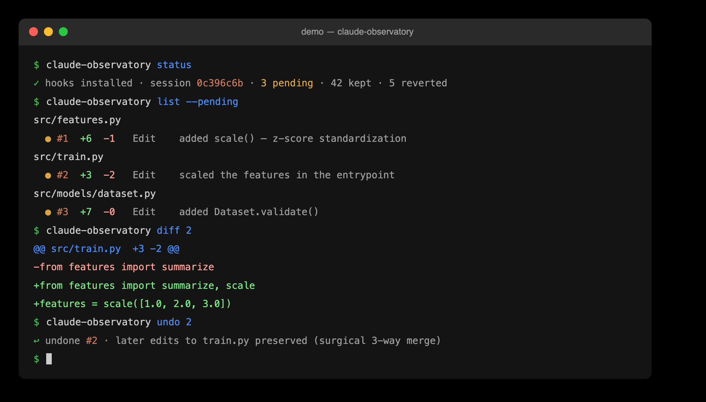
The same tool in both editors
VS Code and JetBrains render identical review surfaces over one backend: icon-only tabs, inline review, and the bottom panels. Decisions made in one appear in the other.